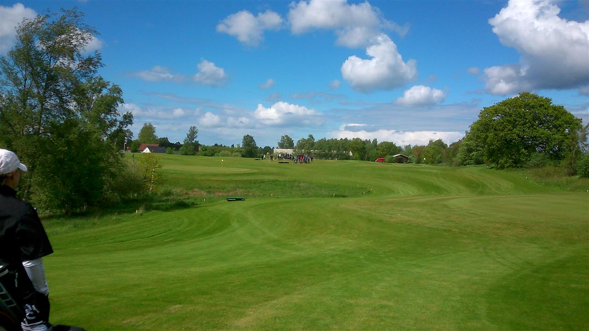

<div class="pages">
  <div data-page="begyndermatch-match-55" class="page navbar-fixed toolbar-fixed" >
    <div class="navbar">
      <div class="navbar-inner">
        <div class="left">
          <a href="#" class="link back icon-only"><i class="icon icon-back"></i></a>
          <!-- <a href="#" class="back link icon-only"><i class="icon icon-back"></i></a> -->
        </div>
        <div class="center">Begynderturnering - Match 55+</div>
        <!-- <div class="right"></div> -->
        <div class="right">
        </div>
      </div>
    </div>
    <div class="page-content" style="padding-top:45px;">
       <div class="content-block">
          <p>Begynderturnering - Match 55+</p>
          <p>Match 55+ er for alle der endnu ikke har opnået banelicens og dermed har over 54 i HCP. Der spilles så vidt muligt hver tirsdag fra kl. 17:00.</p>
          
          <p>Da opnåelse af banelicens blandt andet kræver at du skal have gået Lærkeager 3 gange i min. 18 point, kan du bruge match 55+ til at gå tællende turneringer med mentor. Når du spiller får tildelt 20 ekstra slag og har derfor ialt 5 slag pr. hul, dog 6 slag på de 2 sværeste huller.</p>
          <p>Det koster 20 kr. at deltage i Match 55+. Beløbet bruges til præmier.</p>
          <p>Tilmelding foretages foregår på Golfbox. Tilmelding skal ske senest fredagen før inden kl. 18.00, så vi kan nå at skaffe mentorer nok.</p>
          <p>Når du har fået din banelicens kan du ikke længere deltage i Match 55+, men så kan du tilgengæld begynde at spille med i Match 37 på den store bane.</p>
        </div>
    </div>
    </div>
    </div>
  </div>
</div>
